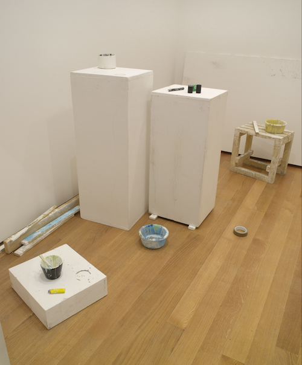

 things from the room in the back This is a web diary of agnes cameron. It's named after the art duo fischlli and weiss' piece things from the room in the back, a precise polyureathane recreation of small pieces of junk they found at the back of their studio. this is largely a technical blog: if you came for snacks, you might be better off at backseat frying dot net.
This site was made using Dave Liepman's tufte-css theme, a css interpretation of tufte-book, and Jekyll, a static site generator. send complaints, questions, frog pics etc to agnesfcameron[at]gmail.com